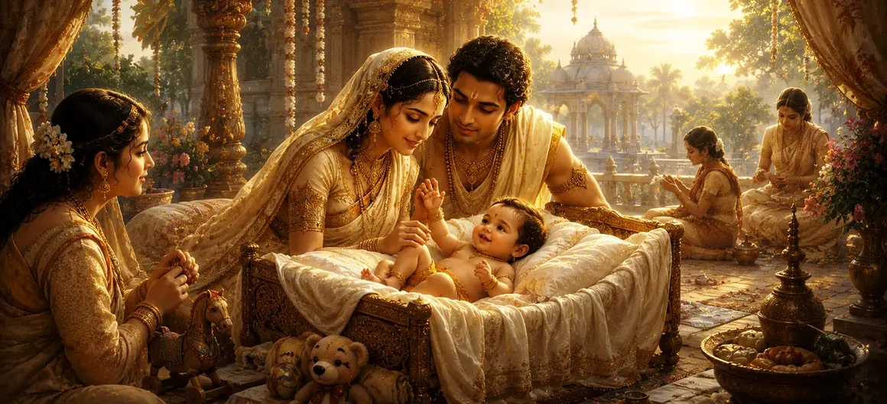

The Condition of Infancy
Transitioning from the microscopic embryology and physical creation of the body in Chapter 22, Chapter 23 of Uma Samhita turns its focus toward the fragile and pristine dawn of mortal life in The Condition of Infancy. Having explored how the human vessel is formed within the womb, the scripture now examines the earliest phase of extra-uterine existence—demonstrating through an exhaustive elevenfold framework how the newborn navigates utter dependence, pristine innocence, and the initial awakening of sensory consciousness under the divine care of Lord Shiva.
This chapter details the absolute vulnerability of the infant, the sacred role of nurturing family care, the absence of ego and malice in early childhood, and the philosophical implications of this unblemished state of being.
Core Topics in This Text (11 Pillars)
- 01 The Pristine Innocence and Purity of the Newborn →
- 02 Absolute Dependence and Mortal Vulnerability →
- 03 The Complete Absence of Ego, Greed, and Duality →
- 04 The Gradual Awakening of Senses and Perception →
- 05 The Sacred Duty of Parental Protection and Care →
- 06 Faint Echoes of Past Memories and Divine Grace →
- 07 Infancy as a Metaphor for Surrender to Shiva →
- 08 Physical Milestones and Early Motor Development →
- 09 The Impressionable Mind and Environmental Influence →
- 10 The Shift from Helpless Infancy to Active Childhood →
- 11 Transitioning from Early Infancy to the Conduct of Women →
1. The Pristine Innocence and Purity of the Newborn
This opening section highlights the unmatched purity of an infant. Uma Samhita notes that a newborn possesses a soul untouched by worldly corruptions, deceit, or social hypocrisy.
This unblemished state serves as a living mirror of divine grace, reminding those around the child of the pristine spiritual essence inherent in all creation under Lord Shiva.
2. Absolute Dependence and Mortal Vulnerability
The text details the complete vulnerability of infancy, emphasizing that unlike other creatures, human infants require prolonged protection, care, and sustenance to survive.
Uma Samhita portrays this utter dependence as a deliberate cosmic design that fosters deep familial bonds, compassion, and selfless love within human society.
3. The Complete Absence of Ego, Greed, and Duality
As the scripture elaborates on the infant mind, it notes the total absence of ego (ahamkara), anger, jealousy, and possessiveness. The child cries only out of genuine need, knowing no malice.
This purity of heart is praised in Puranic lore as a temporary reflection of the liberated state, before worldly conditioning takes root in later years.
4. The Gradual Awakening of Senses and Perception
Uma Samhita describes how the infant gradually begins to interact with the external world through sound, touch, sight, and taste, slowly waking up to the rich tapestry of sensory experience.
Each milestone in perception represents the soul's expanding capacity to engage with the material universe created by the divine forces.
5. The Sacred Duty of Parental Protection and Care
The text outlines the sacred obligations of parents and elders toward the infant. Nurturing, protecting, and guiding a child is presented as a high form of righteous duty (dharma).
Fulfilling this responsibility with love and devotion earns immense spiritual merit, aligning family life with the harmonious order of Lord Shiva's creation.
6. Faint Echoes of Past Memories and Divine Grace
Uma Samhita notes that in quiet moments of infancy, children often gaze into space with serene expressions, reflecting lingering, subtle impressions of past births and divine communion.
As sensory immersion in the material world deepens, these subtle memories gradually fade, replaced by immediate worldly concerns.
7. Infancy as a Metaphor for Surrender to Shiva
The scripture uses the condition of infancy as a profound spiritual metaphor for the devotee's relationship with God. Just as an infant trusts its mother completely, the spiritual seeker must surrender entirely to Lord Shiva.
Absolute surrender dissolves spiritual anxiety and invites the boundless protection and grace of the supreme lord.
8. Physical Milestones and Early Motor Development
Uma Samhita describes the joyful physical milestones of early childhood—smiling, grasping, rolling over, and taking tentative first steps—as vital signs of healthy physical unfolding.
These developmental stages mark the strengthening of the human frame, preparing the child for active participation in the duties of life.
9. The Impressionable Mind and Environmental Influence
The text stresses that the infant mind is highly impressionable, absorbing the sights, sounds, and moral tone of the household and immediate environment like a clean sponge.
This underscores the importance of maintaining a spiritually uplifting, peaceful, and righteous atmosphere in the home during the formative years of childhood.
10. The Shift from Helpless Infancy to Active Childhood
Uma Samhita explains how the helpless condition of infancy gradually gives way to active childhood, speech, curiosity, and the beginning of formal learning and character formation.
This progression represents the expanding horizons of mortal existence, guiding the growing individual toward social responsibility and spiritual education.
11. Transitioning from Early Infancy to the Conduct of Women
Having explored the elevenfold philosophy of infancy, pristine innocence, and early development, Uma Samhita prepares to transition from general childhood to specific social roles, turning its focus in the next chapter to the nature and conduct of women.
This transition bridges the universal beginnings of human life in infancy with the vital societal duties, virtues, and spiritual standing of women in Puranic tradition.
Spiritual Insight
Chapter 23 teaches us through eleven foundational pillars that infancy represents absolute purity, innocence, and complete dependence on divine grace. By emulating the unconditional trust of an infant in our relationship with Lord Shiva, we transcend ego and attain spiritual peace.
Frequently Asked Questions
① How does Uma Samhita characterize the stage of infancy?
The text characterizes infancy as a period of absolute purity, complete dependence on others, and total freedom from egoistic dualities and worldly deception.
② What is the spiritual significance of an infant's innocence?
An infant reflects the unblemished state of the soul before it becomes entangled in worldly desires, serving as a reminder of our divine origins.
③ How does this chapter transition from the previous chapter on the human body?
It moves from the internal formation of the physical vessel in the womb to the newborn's first direct encounters with the outside world and early mortal existence.